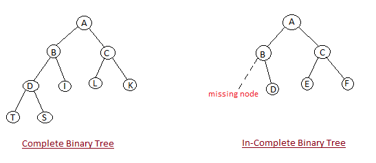
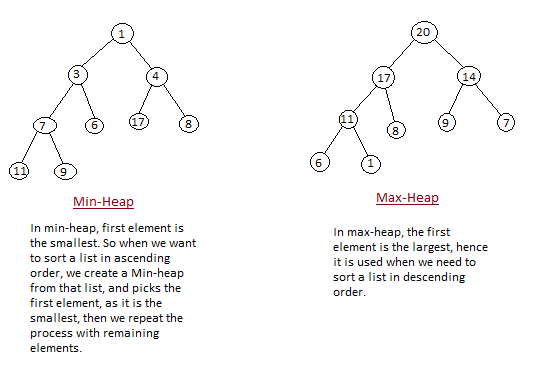

Heap Sort is one of the best sorting methods being in-place and with no quadratic worst-case scenarios. Heap sort algorithm is divided into two basic parts :
Heap is a special tree-based data structure, that satisfies the following special heap properties :


Initially on receiving an unsorted list, the first step in heap sort is to create a Heap data structure(Max-Heap or Min-Heap). Once heap is built, the first element of the Heap is either largest or smallest(depending upon Max-Heap or Min-Heap), so we put the first element of the heap in our array. Then we again make heap using the remaining elements, to again pick the first element of the heap and put it into the array. We keep on doing the same repeatedly untill we have the complete sorted list in our array.
In the below algorithm, initially heapsort() function is called, which calls buildheap() to build heap, which inturn uses satisfyheap() to build the heap.
/* Below program is written in C++ language */
void heapsort(int[], int);
void buildheap(int [], int);
void satisfyheap(int [], int, int);
void main()
{
int a[10], i, size;
cout << "Enter size of list"; // less than 10, because max size of array is 10
cin >> size;
cout << "Enter" << size << "elements";
for( i=0; i < size; i++)
{
cin >> a[i];
}
heapsort(a, size);
getch();
}
void heapsort(int a[], int length)
{
buildheap(a, length);
int heapsize, i, temp;
heapsize = length - 1;
for( i=heapsize; i >= 0; i--)
{
temp = a[0];
a[0] = a[heapsize];
a[heapsize] = temp;
heapsize--;
satisfyheap(a, 0, heapsize);
}
for( i=0; i < length; i++)
{
cout << "\t" << a[i];
}
}
void buildheap(int a[], int length)
{
int i, heapsize;
heapsize = length - 1;
for( i=(length/2); i >= 0; i--)
{
satisfyheap(a, i, heapsize);
}
}
void satisfyheap(int a[], int i, int heapsize)
{
int l, r, largest, temp;
l = 2*i;
r = 2*i + 1;
if(l <= heapsize && a[l] > a[i])
{
largest = l;
}
else
{
largest = i;
}
if( r <= heapsize && a[r] > a[largest])
{
largest = r;
}
if(largest != i)
{
temp = a[i];
a[i] = a[largest];
a[largest] = temp;
satisfyheap(a, largest, heapsize);
}
}
Worst Case Time Complexity : O(n log n) Best Case Time Complexity : O(n log n) Average Time Complexity : O(n log n) Space Complexity : O(n)